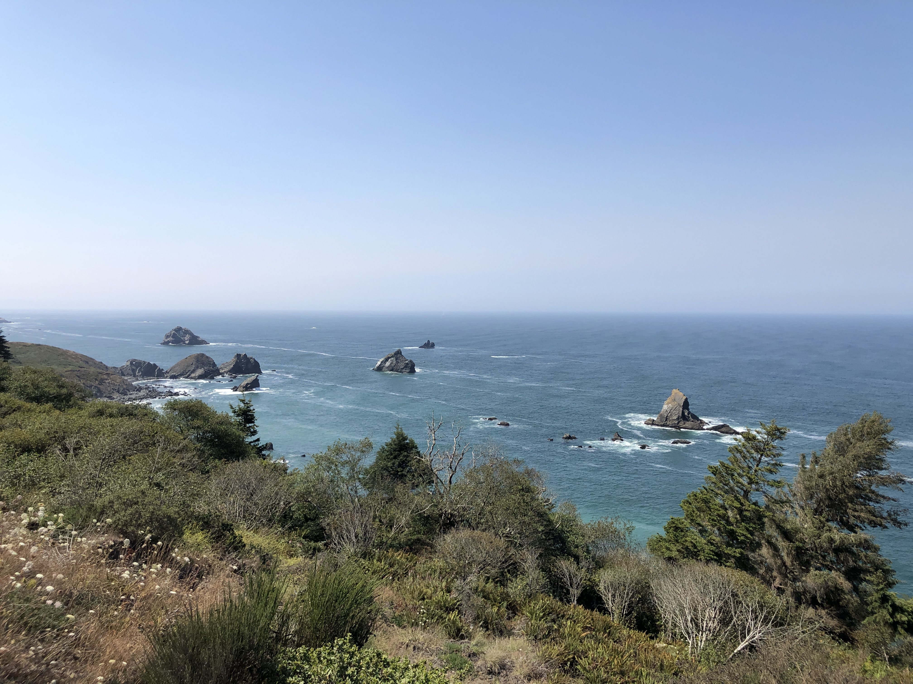

Page 3
Page 3
The West Coast
Peaceful and breathtaking

This was taken somewhere between Trinidad and Crescent City, California. I took a trip with some of my friends
to visit my parents for the weekend who live up in Brookings, Oregon. It was a beautiful short trip. This part
of the West Coast in Northern California and Southern Oregon was peaceful and breathtaking for me. Even though the
water was
too cold to swim in, I enjoyed all of it's nature and habitat. Would definitely be a trip that I would take again
someday.
Table Of Contents
Back
Next